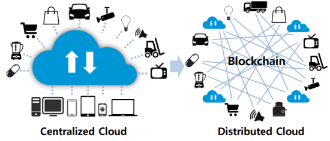
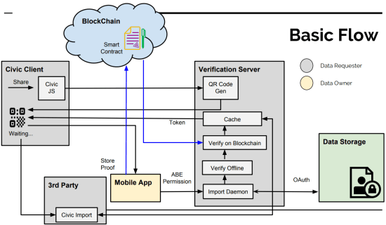
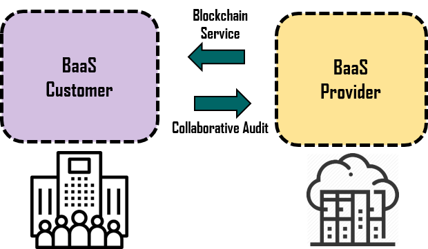
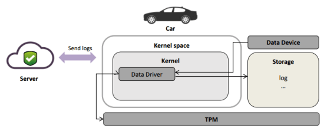
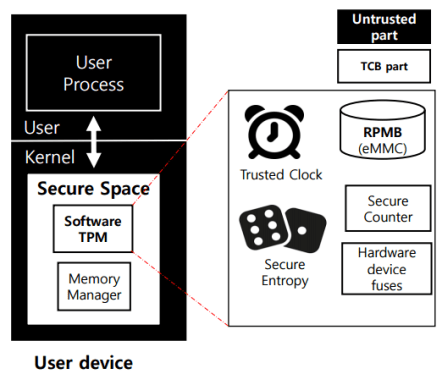
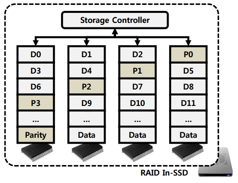
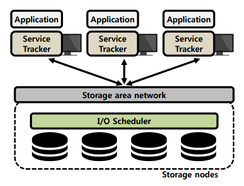
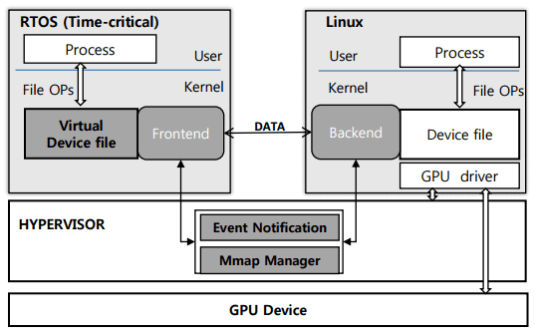

1. Blockchain Technologies
IoT and Blockchain
Motivation
- Today, the Internet of Things(IoT) exists in every corner of our life and provides us with convenient and various. Every things can make relationship with each other, exchange data and create new data.
- But, at the same time, centralized cloud based IoT architecture present various problem such as security, scalability, single point of failure etc.
- As much as we can find IoT devices anywhere in our life, service provider using IoT devices need some secure and convenient mechanism to sell services.
Research subject
- Blockchain [13] is distributed ledger system, it can maintain secure state without trusted third party. Inherently resistant to modification of the data, once recorded, the data in a block cannot be altered retroactively.
- Smart Contract is extended blockchain concept. It is programmable contract, so it can provide various services and make secure transaction with untrusted peer.
Research objects
- IoT device with blockchain and smart contract based services which provides various, secure and instant services.

Blockchain based User Authentication
Motivation
- User authentication should support its reliability and usability. Research of applying blockchain on authentication is quite active nowadays. But current implementations are focused on public authentication system, meaning it does not support transfer of certificate. And it also has innate problem of privacy. So, we suggest authentication system using token which can support transfer, diverse attribute and pseudonymity.
Research subject
- Ethereum Blockhcain
- Smart Contract (Solidity)
- Mobile Application

Auditing Blockchain Platform
Motivation
- As Blockchain-as-a-Service (BaaS) has witnessed a growing interest in enterprises, many BaaS providers have emerged. However, current BaaS providers can pose a potential security threat in the context of a centralized service provider and clients that depend on the provider.
Research objective
- Improving the reliability of BaaS by collaborative auditing between clients
Research subject
- The research covers consensus and fault detection mechanisms in distributed systems. Specifically, we study possible faulty behaviors by a malicious BaaS provider and develop a system that can tolerate those by collaborative auditing between clients.

2. System Security
Secure logging scheme based on TPM 2.0
Motivation
- As the connected car environment spreads, the amount of data generated in the vehicle increases.
- Whether the network is on-line or off-line, data is generated in the secure state.
- The trusted server must be able to verify that the data generated by vehicle is correct.
Research subject
- Design secure logging scheme based on TPM 2.0 for in-vehicle data protection
Research objects
- Log verification mechanism
- Log attack scenario
- Software TPM

Software TPM for data security
TPM Data Security
- Developing and leveraging Software Trusted Platform Module function to provide security functions
Motivation
-
-
TPM is a hardware function which supports security tasks.
- Key generation, Encryption, Attestation, …
- But, hardware TPM is not provided in various platforms.
- Also, hardware TPM is low-cost MCU so it causes low performances.
-
Solution is develop a software implementation of TPM.
- To make TPM functions adaptability with variety of platform
- Providing better performance for security tasks
Method
-
Implement TPM 2.0 specifications functions on Software TPM.
- Trusted storage, trusted clock, secure entropy, …
-
Protect their execution leveraging kernel isolation.
- Same as Nested kernel, SKEE, KENALI
Expected Results
- Successfully deploy software TPM.
- Take advantages of software TPM to develop security applications.

3. Storage system
RAID In SSD
Ensures the reliability of flash memory.
Motivation
Current NAND flash products ensure reliability by employing error-correcting codes (ECCs).
- In recent years, multi-level cell (MLC) and triple-level cell (TLC) flash memories have been developed as effective solutions to reduce the cost of flash devices.
- Traditionally, single-level cell (SLC) flash memory uses single-bit ECC. However, MLC and TLC flash memories show a much higher bit-error rate (BER). Therefore, codes with strong error-correction capabilities, like BCH or RS codes, are used. These ECCs require a high hardware complexity and increase the read and write latencies.
- Another approach for reliability is adopt redundancy in storage level. Previous studies [1][2][3][4] have been tried to adapt Redundant Arrays of Inexpensive Disks (RAID) [5] technique to flash memory.
- However, these studies did not consider the characteristics of flash memory, such as the characteristics of block/chip failures, the Hybrid FTL of SSD, and multi-channels.
Research subject
- Designing erasure codes and Hybrid-FTL in order to increase the reliability of flash memory without considerably sacrificing the performance of SSDs.
Research objects
- Flash-aware erasure codes
- RAID-aware Hybrid-FTL

Storage QoS
Ensure specific performance levels for applications that use the storage.
Motivation
- Distributed storage systems such as Ceph [6] are widely used to store a huge amount of user data generated from applications.
-
Each application accessing a distributed storage system has different performance requirements [3]Remote Desktop: requires low latency.
- Virus Scan: requires high throughput
- However, previous studies [7][8][9][10][11] have limited support for a various performance requirements or do not support storage QoS in distributed storage systems
Research subject
- Designing a storage QoS method to support clients with varying performance requirements in distributed storage systems while maximizing storage utilization
Research objects
- Feedback mechanism for I/O scheduling
- I/O scheduling method
- I/O request distribution protocol

4. Virtualization
GPU Virtualization
Supporting Dual Operating Systems, Real-Time Operating System and Linux with (GP)GPU sharing.
Motivation
- Currently there is no GPU device driver in the RTOS, but the GPU is very important device in the embedded system, especially for time-critical job [12].
- Linux with GPU device driver is released by each embedded board manufacture, so the embedded kernel developer doesn’t have to port device driver.
Research subject
- Virtualization with GPU sharing model to support running RTOS and Linux simultaneously on a physical machine and GPU aid for computing in RTOS.
-
Device driver level virtualization (Para-virtualization)
- High performance
- Extensibility (General device sharing)
Research objects
-
Virtualization with GPU sharing (inter-VM)
- Data sharing
- Event notification
- GPU Scheduling

4. References
[1] Kim, Jaeho, et al. “Improving SSD reliability with RAID via elastic striping and anywhere parity.” Dependable Systems and Networks (DSN), 2013 43rd Annual IEEE/IFIP
International Conference on. IEEE, 2013.
[2] Park, Heejin, et al. “Incremental redundancy to reduce data retention errors in flash-based SSDs.” Mass Storage Systems and Technologies (MSST), 2015 31st Symposium on.
IEEE, 2015.
[3] Lee, Sehwan, et al. “A lifespan-aware reliability scheme for RAID-based flash storage.” Proceedings of the 2011 ACM Symposium on Applied Computing. ACM, 2011.
[4] Im, Soojun, and Dongkun Shin. “Flash-aware RAID techniques for dependable and high-performance flash memory SSD.” IEEE Transactions on Computers 60.1 (2011): 80-92.
[5] D. A. Patterson, G. Gibson, and R. H. Katz, A case for redundant arrays of inexpensive disks (RAID), Proc. of the 1988 ACM SIGMOD International Conference on
Management of Data, pp.109-116, 1988.
[6] Weil, Sage A., et al. Ceph: A scalable, high-performance distributed file system. In Proceedings of the 7th symposium on Operating systems design and implementation.
USENIX Association, 2006.
[7] Gulati, Ajay, Arif Merchant, and Peter J. Varman. mClock: handling throughput variability for hypervisor IO scheduling. In Proceedings of the 9th USENIX conference on
Operating systems design and implementation. USENIX Association, 2010.
[8] Park, Stan, and Kai Shen. FIOS: a fair, efficient flash I/O scheduler. FAST. 2012.
[9] Shen, Kai, and Stan Park. FlashFQ: A Fair Queueing I/O Scheduler for Flash-Based SSDs. USENIX Annual Technical Conference. 2013.
[10] Park, Hyunchan, et al. Storage SLA guarantee with novel SSD I/O scheduler in virtualized data centers. IEEE Transactions on Parallel and Distributed Systems 27.8: 2422-2434,
2016
[11] Gulati, Ajay, Irfan Ahmad, and Carl A. Waldspurger. PARDA: Proportional Allocation of Resources for Distributed Storage Access. FAST. 2009.
[12] Glenn A. Elliott et al. Real-World Constraints of GPUs in Real-Time Systems. 2011 IEEE 17th International Conference on Embeed and Real-Time Computing Systems and
Applications
[13] Konstantinos and Michael (201“) Blockchains and Smart Contracts for the Internet of Things in IEEE ACCESS
5. Previous Research
Previous research description page can be found at the following links